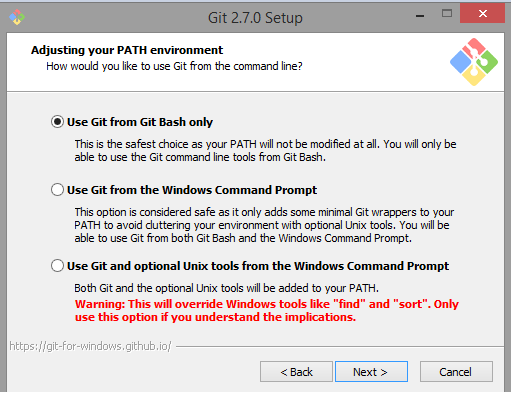

Git est un logiciel libre créé par Linus Torvalds (créateur de Linux). C’est le logiciel de gestion de versions le plus populaire (plus de 12 millions de personnes).
C’EST QUOI ?
Git est un outil de versioning. Avant d’aller plus loin, il est important de comprendre ce qu’est un outil de versioning.
Un outil de versioning est un outil permettant de gérer un projet. Il permet d’avoir un historique de tout ce qui est fait sur un projet. Par exemple, si une mise à jour de votre projet est codée, mais un problème survient, vous aurez la possibilité de retourner à une ancienne version. Ça permet aussi de résoudre des conflits de fusion de projet. Au lieu de fusionner vos ajouts avec ceux de votre collège manuellement, git peut le faire pour vous. Mais il est possible qu’il y ait une erreur dans le fusionnement. Un outil de versioning vous aidera à régler cette erreur. Finalement, cela offre la possibilité d’avoir des branches pour ne pas modifier le projet principal. Par exemple, vous souhaitez ajouter une fonctionnalité à votre programme, mais vous n’êtes pas certain que c’est une bonne idée de le faire. Il est donc pratique d’ajouter cette fonctionnalité ailleurs que sur la version principale du projet. Cela vous permettra de tester si cette fonctionnalité fonctionne ou si elle est pertinente.
Pourquoi git ?
L’avantage de git, c’est qu’il est distribué. Pour comprendre cet avantage, il faut connaitre comment fonctionne d’autres systèmes de Versioning. (comme ClearCase, CVS ou Vault)
Généralement les autres programmes fonctionnent avec un système centralisé. C’est-à-dire un serveur qui va contenir votre projet. Lorsqu’on fait des modifications, on va dire à ce serveur d’enregistrer la nouvelle version du projet. Le problème avec cette façon de faire, c’est que tout est sur un serveur central. Si le serveur brise, vous pourrez perdre votre projet.
Git lui, possède un système décentralisé. C’est-à-dire que chaque utilisateur va avoir un historique du projet. Lorsqu’on modifie quelque chose, on le fait directement sur son propre historique. Lorsqu’on est satisfait de nos modifications, on l’envoie sur un serveur central. L’avantage est que c’est distribué, ça permet d’aller plus vite et d’avoir des données plus sécurisées puisqu’elles sont stockées à plusieurs endroits.
Un autre avantage de git est git hub. Vous pouvez en apprendre plus sur git hub dans la section “Git Hub” de ce site internet.
INSTALLER
Pour installer Git, aller sur le site de téléchargement de Git :
https://git-scm.com/downloads
Cliquer sur votre système d’exploitation (Windows par exemple) et git se téléchargera.
Double-cliquez sur l’exécutable téléchargé . L’écran suivant apparaît :
Cliquez sur le bouton “Next” jusqu’à arriver à l’écran suivant :

Afin de pouvoir lancer des commandes Git en ligne de commande, choisissez ici la deuxième option, et non la première qui est cochée par défaut.
Appuyer sur Next / Finish jusqu’à la fin de l’installation.